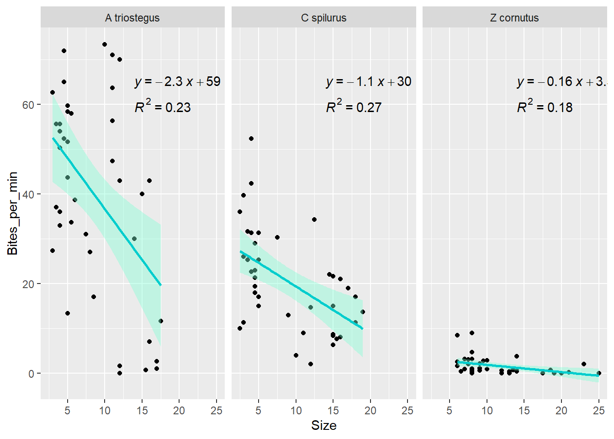
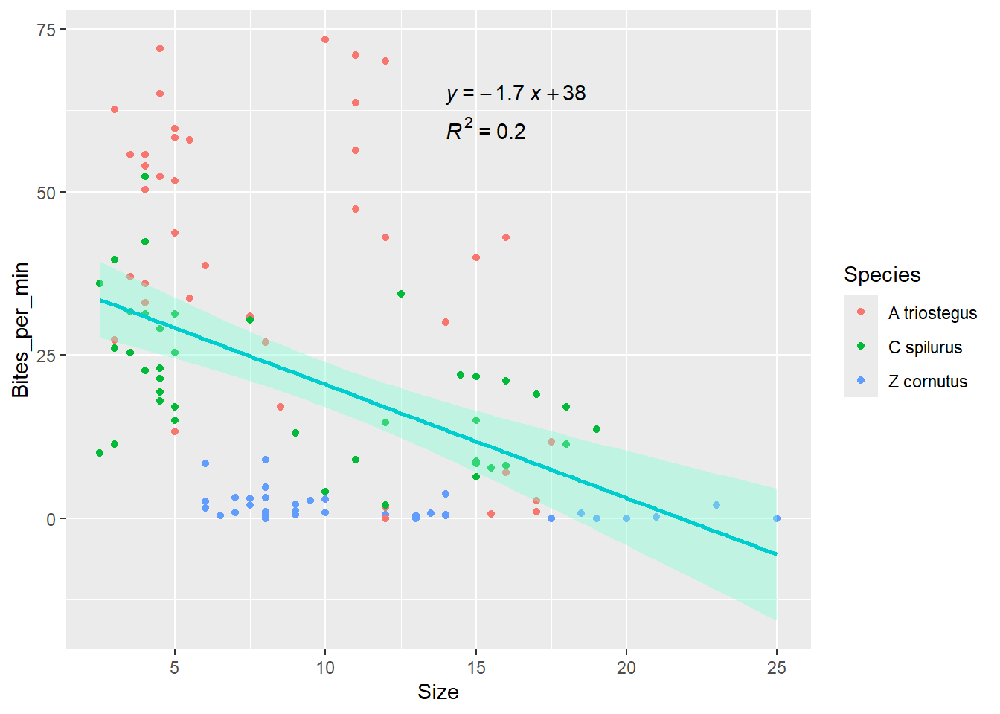
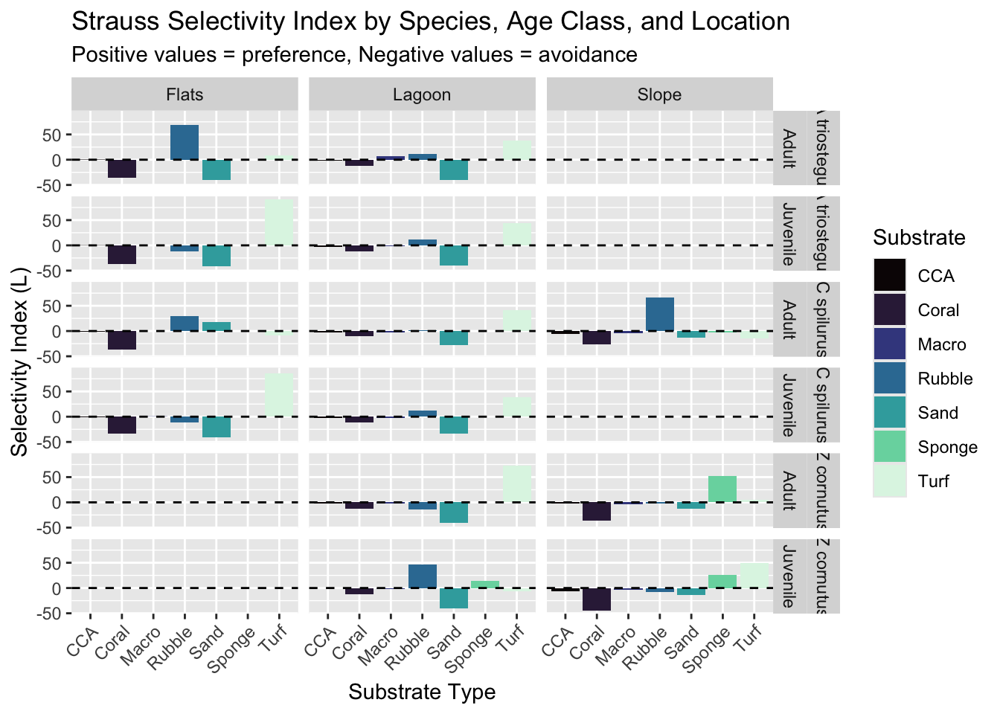
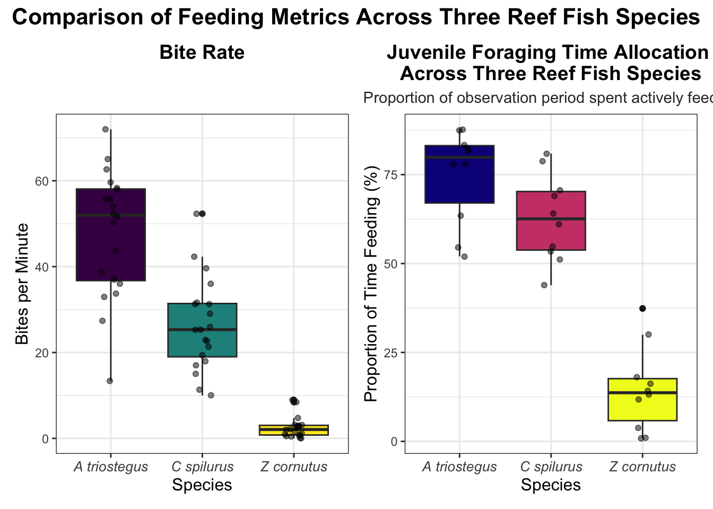
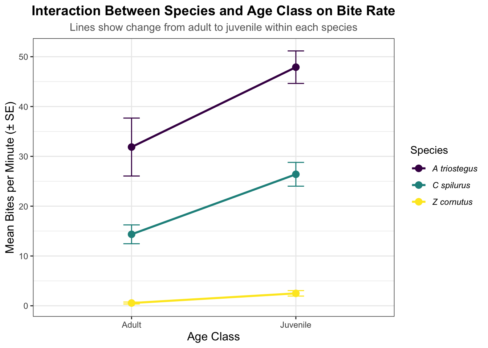

library(tidyverse)
library(here)
library(ggpubr)
library(patchwork)Plots
Load Libraries
Load Data
Bites <- read_csv(here("Data", "Bite_Rates.csv")) %>%
mutate(across(everything(), ~replace(., is.na(.), 0))) %>%
mutate(Total_Bites = Coral_Bites + Rubble_Bites + Sand_Bites + Turf_Bites + Macro_Bites + CCA_Bites + Sponge_Bites) %>%
mutate(Bites_per_min = case_when(
Species %in% c("A triostegus", "C spilurus") ~ Total_Bites / 3,
Species == "Z cornutus" ~ Total_Bites / 7))
#######################################
Transects_raw<- read_csv(here("Data", "Transects.csv")) # read in transect data
substrate_availability<- Transects_raw %>%
# Select only the columns we need (column 12 has location names, 13-19 have percentages)
# Use backticks ` ` because column names have spaces and % symbols
select(Location = `...12`, # Column 12 (unnamed, so R calls it ...12) has "Slope", "Flat", "Lagoon"
Coral_Avail = `% coral`, # Rename to simpler names without spaces
Rubble_Avail = `% rubble`,
Sand_Avail = `% sand`,
Turf_Avail = `% turf`,
Macro_Avail = `% macro`,
CCA_Avail = `% CCA`,
Sponge_Avail = `% sponge`) %>%
filter(!is.na(Location)) %>% # Keep only rows where Location is not NA (removes all the empty rows)
mutate(Location = case_when(Location == "Slope" ~ "S", # Change location names to match the Bites data (S, F, L instead of Slope, Flat, Lagoon)
Location == "Flat" ~ "F",
Location == "Lagoon" ~ "L"))
# view(substrate_availability)
#######################################
Time_Foraging<- read_csv(here("Data", "Time Foraging.csv"))
# These are for when all of the transect data is inputted so we can run a Strauss Selectivity Test
Flats_Bites <- Bites %>%
filter(Location == "F")
Slope_Bites <- Bites %>%
filter(Location == "S")
Lagoon_Bites <- Bites %>%
filter(Location == "L")
view(Bites)
view(Flats_Bites)
view(Slope_Bites)
view(Lagoon_Bites)Lets make a plot
LR1 <- ggplot(data = Bites, mapping = aes(x = Size, y = Bites_per_min)) +
geom_point() +
geom_smooth(method = "lm", se = TRUE, color = "cyan3", fill = "aquamarine") +
stat_regline_equation(
aes(label = ..eq.label..),
label.x = 14,
label.y = 65 ) +
stat_cor(
aes(label = ..rr.label..),
label.x = 14,
label.y = 60) +
facet_wrap(~ Species)
LR2 <- ggplot(data = Bites, mapping = aes(x = Size, y = Bites_per_min)) +
geom_point(aes(color = Species)) +
geom_smooth(method = "lm", se = TRUE, color = "cyan3", fill = "aquamarine") +
stat_regline_equation(
aes(label = ..eq.label..),
label.x = 14,
label.y = 65 ) +
stat_cor(
aes(label = ..rr.label..),
label.x = 14,
label.y = 60)
LR1
LR2
Strauss Selectivity Index
# Calculate Bite Proportions (What the fish are eating)
# Strauss formula: L = r - p
# r = proportion of bites on each substrate (what they're eating)
# p = proportion available (what's there) — we have this in substrate_availability
# Calculate r
bite_proportions<- Bites %>%
group_by(Species, Age_Class, Location) %>%
summarise( # sum up all bites for each substrate type within each group
Coral_Bites = sum(Coral_Bites),
Rubble_Bites = sum(Rubble_Bites),
Sand_Bites = sum(Sand_Bites),
Turf_Bites = sum(Turf_Bites),
Macro_Bites = sum(Macro_Bites),
CCA_Bites = sum(CCA_Bites),
Sponge_Bites = sum(Sponge_Bites),
Total_Bites = sum(Total_Bites), # calculate total bites acros all substrates
n_observations = n()) %>% # count how many fish observations are in each group
mutate( # calculate proportions = bites on substrate / total bites
Coral_Prop = (Coral_Bites / Total_Bites) * 100, # multiply by 100 to get % to match substrate_availability
Rubble_Prop = (Rubble_Bites / Total_Bites) * 100,
Sand_Prop = (Sand_Bites / Total_Bites) * 100,
Turf_Prop = (Turf_Bites / Total_Bites) * 100,
Macro_Prop = (Macro_Bites / Total_Bites) * 100,
CCA_Prop = (CCA_Bites / Total_Bites) * 100,
Sponge_Prop = (Sponge_Bites / Total_Bites) * 100)
#view(bite_proportions)
# Join Bite Proportions with substrate availability
strauss_data<- bite_proportions %>%
left_join(substrate_availability, by = "Location") # connect two tables by "location" column
# keep all rows from bite_proportions and add matching columns from substrate_availability
#view(strauss_data)
# Calculate L (strauss slectivity index) for each substrate
# L = r - p
# L = proportion of bites (what they ate) - proportion available (what was there)
strauss_results<- strauss_data %>%
mutate(Coral_L = Coral_Prop - Coral_Avail,
Rubble_L = Rubble_Prop - Rubble_Avail,
Sand_L = Sand_Prop - Sand_Avail,
Turf_L = Turf_Prop - Turf_Avail,
Macro_L = Macro_Prop - Macro_Avail,
CCA_L = CCA_Prop - CCA_Avail,
Sponge_L = Sponge_Prop - Sponge_Avail)
strauss_results %>%
select(Species, Age_Class, Location, # look at just selectivity results (L values)
Coral_L, Rubble_L, Sand_L, Turf_L, Macro_L, CCA_L, Sponge_L)# A tibble: 13 × 10
# Groups: Species, Age_Class [6]
Species Age_Class Location Coral_L Rubble_L Sand_L Turf_L Macro_L CCA_L
<chr> <chr> <chr> <dbl> <dbl> <dbl> <dbl> <dbl> <dbl>
1 A triosteg… Adult F -36.4 69.1 -40.6 8.76 0 -0.833
2 A triosteg… Adult L -11.8 10.7 -40.4 37.2 6.87 -2.5
3 A triosteg… Juvenile F -36.7 -12.4 -40.8 90.4 0 -0.572
4 A triosteg… Juvenile L -12.3 11.8 -39.7 44.5 -1.84 -2.5
5 C spilurus Adult F -36.7 29.3 17.4 -9.17 0 -0.833
6 C spilurus Adult L -10.5 1.57 -27.9 41.4 -2.13 -2.5
7 C spilurus Adult S -26.1 66.9 -12.5 -15 -4.17 -5.83
8 C spilurus Juvenile F -33.4 -10.8 -40.8 85.4 0.456 -0.833
9 C spilurus Juvenile L -12.1 11.6 -34.0 39.2 -2.5 -2.22
10 Z cornutus Adult L -12.5 -14.2 -40.8 72.5 -2.5 -2.5
11 Z cornutus Adult S -35.8 -1.67 -13.3 4.44 -4.17 -1.67
12 Z cornutus Juvenile L -11.7 46.5 -39.6 -6.31 -2.5 -0.0309
13 Z cornutus Juvenile S -44.2 -7.62 -13.3 49.5 -4.17 -5.83
# ℹ 1 more variable: Sponge_L <dbl># For reference: -value means fish avoid, +value means fish preferInterpreting Results Positive = preference, Negative = avoidance
A triostegus:
Loves turf algae. Juveniles in the Flats have a selectivity of +90.4! Avoids coral and sand (all negative values) Adults also like rubble in Flats (+69.1)
C spilurus:
Juveniles love turf (+85.4 in Flats) Adults are more variable — prefer rubble on Slope (+66.9), turf in Lagoon (+41.4), and even sand in Flats (+17.4) Adults on Slope strongly avoid turf (-15.0)
Z cornutus:
Adults on Slope love sponge! (+52.2) Juveniles also eat sponge more than expected (+25.6 on Slope, +13.6 in Lagoon) Juveniles in Lagoon prefer rubble (+46.5) All groups avoid coral (all negative)
Strauss Plot
# reshape data into long format for ggplot
strauss_long<- strauss_results%>%
select(Species, Age_Class, Location,# select columns for plot
Coral_L, Rubble_L, Sand_L, Turf_L, Macro_L, CCA_L, Sponge_L) %>%
pivot_longer(cols = Coral_L:Sponge_L,# columns to resshape
names_to = "Substrate", # new column name for substrate types
values_to = "Selectivity") %>% # new column name for L values
mutate(Substrate = str_replace(Substrate, "_L", "")) %>% # clean substrate names ( remove "_L" from end of name)
mutate(Location = case_when( # change location codes to full names for plot
Location == "F" ~ "Flats",
Location == "L" ~ "Lagoon",
Location == "S" ~ "Slope"))
# Plot
strauss_plot<- ggplot(data = strauss_long, # plot data
aes(x = Substrate,
y = Selectivity,
fill = Substrate)) +
geom_col()+ # bar plot
geom_hline(yintercept = 0, linetype = "dashed", color = "black")+ # add horizontal reference line at 0
facet_grid(Species + Age_Class ~ Location)+ # create separate panels for each species and age class
scale_fill_viridis_d(option = "magma")+ # color blind friendly
theme(axis.text.x = element_text(angle = 45, hjust = 1))+ # rotate axis labels
labs(title = "Strauss Selectivity Index by Species, Age Class, and Location",
subtitle = "Positive values = preference, Negative values = avoidance",
x = "Substrate Type",
y = "Selectivity Index (L)",
fill = "Substrate")
strauss_plot
ggsave(here("output", "strauss_plot.png"))Conspecific Substrate Preference (Juv vs adult)
# comparing the substrate preference for juveniles and adults for the same species to answer hypothesis 2 better, only using preferences which came out to 3 per species
bite_proportions <- Bites %>%
mutate(
Coral_Prop = (Coral_Bites / Total_Bites) * 100,
Rubble_Prop = (Rubble_Bites / Total_Bites) * 100,
Sand_Prop = (Sand_Bites / Total_Bites) * 100,
Turf_Prop = (Turf_Bites / Total_Bites) * 100,
Macro_Prop = (Macro_Bites / Total_Bites) * 100,
CCA_Prop = (CCA_Bites / Total_Bites) * 100,
Sponge_Prop = (Sponge_Bites / Total_Bites) * 100
)
# Join with substrate availability by location
strauss_data <- bite_proportions %>%
left_join(substrate_availability, by = "Location")
# Calculate Strauss selectivity index (L = r - p) for each individual
strauss_results_indv <- strauss_data %>%
mutate(
Coral_L = Coral_Prop - Coral_Avail,
Rubble_L = Rubble_Prop - Rubble_Avail,
Sand_L = Sand_Prop - Sand_Avail,
Turf_L = Turf_Prop - Turf_Avail,
Macro_L = Macro_Prop - Macro_Avail,
CCA_L = CCA_Prop - CCA_Avail,
Sponge_L = Sponge_Prop - Sponge_Avail
)
strauss_results_indv %>%
select(Species, Age_Class, Location,
Coral_L, Rubble_L, Sand_L, Turf_L, Macro_L, CCA_L, Sponge_L)# A tibble: 120 × 10
Species Age_Class Location Coral_L Rubble_L Sand_L Turf_L Macro_L CCA_L
<chr> <chr> <chr> <dbl> <dbl> <dbl> <dbl> <dbl> <dbl>
1 Z cornutus Juvenile L 16.1 40.6 -40.8 -10.8 -2.5 -2.5
2 Z cornutus Juvenile L -12.5 46.4 -40.8 11.9 -2.5 -2.5
3 Z cornutus Juvenile L -12.5 35.8 -40.8 22.5 -2.5 -2.5
4 Z cornutus Juvenile S -44.2 -14.2 -13.3 85 -4.17 -5.83
5 Z cornutus Juvenile S -44.2 -14.2 -13.3 85 -4.17 -5.83
6 Z cornutus Juvenile L -12.5 69.2 -40.8 -10.8 -2.5 -2.5
7 Z cornutus Juvenile L -12.5 69.2 -40.8 -10.8 -2.5 -2.5
8 Z cornutus Juvenile L -12.5 16.8 -40.8 -10.8 -2.5 -2.5
9 Z cornutus Juvenile L NaN NaN NaN NaN NaN NaN
10 Z cornutus Juvenile L -12.5 -30.8 -40.8 -10.8 -2.5 97.5
# ℹ 110 more rows
# ℹ 1 more variable: Sponge_L <dbl>strauss_atrio <- strauss_results_indv %>%
filter(Species == "A triostegus")
strauss_cspil <- strauss_results_indv %>%
filter(Species == "C spilurus")
strauss_zcorn <- strauss_results_indv %>%
filter(Species == "Z cornutus")
view(strauss_atrio)
t.test(Rubble_L ~ Age_Class, data = strauss_atrio)
Welch Two Sample t-test
data: Rubble_L by Age_Class
t = 1.7443, df = 36.368, p-value = 0.08955
alternative hypothesis: true difference in means between group Adult and group Juvenile is not equal to 0
95 percent confidence interval:
-4.252851 56.672125
sample estimates:
mean in group Adult mean in group Juvenile
38.29803 12.08839 t.test(Turf_L ~ Age_Class, data = strauss_atrio)
Welch Two Sample t-test
data: Turf_L by Age_Class
t = -2.0783, df = 36.279, p-value = 0.04481
alternative hypothesis: true difference in means between group Adult and group Juvenile is not equal to 0
95 percent confidence interval:
-60.3491462 -0.7462794
sample estimates:
mean in group Adult mean in group Juvenile
18.92768 49.47540 t.test(Macro_L ~ Age_Class, data = strauss_atrio)
Welch Two Sample t-test
data: Macro_L by Age_Class
t = 1.427, df = 18.38, p-value = 0.1704
alternative hypothesis: true difference in means between group Adult and group Juvenile is not equal to 0
95 percent confidence interval:
-4.07652 21.41872
sample estimates:
mean in group Adult mean in group Juvenile
7.399547 -1.271552 t.test(Rubble_L ~ Age_Class, data = strauss_cspil)
Welch Two Sample t-test
data: Rubble_L by Age_Class
t = 1.6118, df = 35.51, p-value = 0.1159
alternative hypothesis: true difference in means between group Adult and group Juvenile is not equal to 0
95 percent confidence interval:
-5.008795 43.699070
sample estimates:
mean in group Adult mean in group Juvenile
21.902080 2.556943 t.test(Sand_L ~ Age_Class, data = strauss_cspil)
Welch Two Sample t-test
data: Sand_L by Age_Class
t = 2.9436, df = 22.197, p-value = 0.007468
alternative hypothesis: true difference in means between group Adult and group Juvenile is not equal to 0
95 percent confidence interval:
5.306716 30.570622
sample estimates:
mean in group Adult mean in group Juvenile
-19.71321 -37.65188 t.test(Turf_L ~ Age_Class, data = strauss_cspil)
Welch Two Sample t-test
data: Turf_L by Age_Class
t = -3.0699, df = 37.95, p-value = 0.003943
alternative hypothesis: true difference in means between group Adult and group Juvenile is not equal to 0
95 percent confidence interval:
-69.28808 -14.21894
sample estimates:
mean in group Adult mean in group Juvenile
20.52905 62.28256 t.test(Rubble_L ~ Age_Class, data = strauss_zcorn)
Welch Two Sample t-test
data: Rubble_L by Age_Class
t = -1.5311, df = 23.198, p-value = 0.1393
alternative hypothesis: true difference in means between group Adult and group Juvenile is not equal to 0
95 percent confidence interval:
-51.276325 7.644518
sample estimates:
mean in group Adult mean in group Juvenile
2.5000 24.3159 t.test(Turf_L ~ Age_Class, data = strauss_zcorn)
Welch Two Sample t-test
data: Turf_L by Age_Class
t = -0.0037009, df = 24.97, p-value = 0.9971
alternative hypothesis: true difference in means between group Adult and group Juvenile is not equal to 0
95 percent confidence interval:
-28.29347 28.19197
sample estimates:
mean in group Adult mean in group Juvenile
19.08654 19.13729 t.test(Sponge_L ~ Age_Class, data = strauss_zcorn)
Welch Two Sample t-test
data: Sponge_L by Age_Class
t = 1.3999, df = 16.393, p-value = 0.1802
alternative hypothesis: true difference in means between group Adult and group Juvenile is not equal to 0
95 percent confidence interval:
-8.177929 40.160549
sample estimates:
mean in group Adult mean in group Juvenile
27.72894 11.73763 A trio conspecific substrate differences (adult vs juvenile)
| Substrate | t statistic | df | p‑value | 95% CI (lower) | 95% CI (upper) | Mean Adult | Mean Juvenile |
|---|---|---|---|---|---|---|---|
| Rubble_L | 1.7443 | 36.368 | 0.0896 | −4.253 | 56.672 | 38.298 | 12.088 |
| Turf_L | −2.0783 | 36.279 | 0.0448 | −60.349 | −0.746 | 18.928 | 49.475 |
| Macro_L | 1.4270 | 18.380 | 0.1704 | −4.077 | 21.419 | 7.400 | −1.272 |
C spil conspecific substrate differences (adult vs juvenile)
| Substrate | t statistic | df | p‑value | 95% CI (lower) | 95% CI (upper) | Mean Adult | Mean Juvenile |
|---|---|---|---|---|---|---|---|
| Rubble_L | 1.6118 | 35.510 | 0.1159 | −5.009 | 43.699 | 21.902 | 2.557 |
| Sand_L | 2.9436 | 22.197 | 0.0075 | 5.307 | 30.571 | −19.713 | −37.652 |
| Turf_L | −3.0699 | 37.950 | 0.0039 | −69.288 | −14.219 | 20.529 | 62.283 |
Z corn conspecific substrate differences (adult vs juvenile)
| Substrate | t statistic | df | p‑value | 95% CI (lower) | 95% CI (upper) | Mean Adult | Mean Juvenile |
|---|---|---|---|---|---|---|---|
| Rubble_L | −1.5311 | 23.198 | 0.1393 | −51.276 | 7.645 | 2.500 | 24.316 |
| Turf_L | −0.0037 | 24.970 | 0.9971 | −28.293 | 28.192 | 19.087 | 19.137 |
| Sponge_L | 1.3999 | 16.393 | 0.1802 | −8.178 | 40.161 | 27.729 | 11.738 |
Heterospecific Substrate preferences (Juveniles and adults)
#With this I will compare the substrate preferences of juveniles across species and adults across species
Juvenile <- strauss_results_indv %>% filter(Age_Class == "Juvenile") %>%
drop_na()
Adult <- strauss_results_indv %>% filter(Age_Class == "Adult") %>%
drop_na()
#Juveniles
# Rubble_L
rubble_aov_j <- aov(Rubble_L ~ Species, data = Juvenile)
summary(rubble_aov_j) Df Sum Sq Mean Sq F value Pr(>F)
Species 2 4628 2314 1.529 0.226
Residuals 56 84774 1514 TukeyHSD(rubble_aov_j) Tukey multiple comparisons of means
95% family-wise confidence level
Fit: aov(formula = Rubble_L ~ Species, data = Juvenile)
$Species
diff lwr upr p adj
C spilurus-A triostegus -9.531445 -39.153447 20.09056 0.7199977
Z cornutus-A triostegus 12.227515 -17.781719 42.23675 0.5918328
Z cornutus-C spilurus 21.758961 -8.250273 51.76819 0.1974985# Sand_L
sand_aov_j <- aov(Sand_L ~ Species, data = Juvenile)
summary(sand_aov_j) Df Sum Sq Mean Sq F value Pr(>F)
Species 2 1834 917.1 11.05 9.04e-05 ***
Residuals 56 4650 83.0
---
Signif. codes: 0 '***' 0.001 '**' 0.01 '*' 0.05 '.' 0.1 ' ' 1TukeyHSD(sand_aov_j) Tukey multiple comparisons of means
95% family-wise confidence level
Fit: aov(formula = Sand_L ~ Species, data = Juvenile)
$Species
diff lwr upr p adj
C spilurus-A triostegus 2.372029 -4.565318 9.309376 0.6903165
Z cornutus-A triostegus 12.934591 5.906556 19.962626 0.0001292
Z cornutus-C spilurus 10.562562 3.534527 17.590597 0.0018191# Turf_L
turf_aov_j <- aov(Turf_L ~ Species, data = Juvenile)
summary(turf_aov_j) Df Sum Sq Mean Sq F value Pr(>F)
Species 2 19029 9515 4.768 0.0122 *
Residuals 56 111744 1995
---
Signif. codes: 0 '***' 0.001 '**' 0.01 '*' 0.05 '.' 0.1 ' ' 1TukeyHSD(turf_aov_j) Tukey multiple comparisons of means
95% family-wise confidence level
Fit: aov(formula = Turf_L ~ Species, data = Juvenile)
$Species
diff lwr upr p adj
C spilurus-A triostegus 12.80717 -21.20203 46.816357 0.6384067
Z cornutus-A triostegus -30.33811 -64.79188 4.115667 0.0949112
Z cornutus-C spilurus -43.14527 -77.59905 -8.691498 0.0106117# Macro_L
macro_aov_j <- aov(Macro_L ~ Species, data = Juvenile)
summary(macro_aov_j) Df Sum Sq Mean Sq F value Pr(>F)
Species 2 68.14 34.07 8.85 0.000457 ***
Residuals 56 215.60 3.85
---
Signif. codes: 0 '***' 0.001 '**' 0.01 '*' 0.05 '.' 0.1 ' ' 1TukeyHSD(macro_aov_j) Tukey multiple comparisons of means
95% family-wise confidence level
Fit: aov(formula = Macro_L ~ Species, data = Juvenile)
$Species
diff lwr upr p adj
C spilurus-A triostegus 0.4843177 -1.009533 1.9781684 0.7164340
Z cornutus-A triostegus -2.0179220 -3.531301 -0.5045430 0.0061301
Z cornutus-C spilurus -2.5022396 -4.015619 -0.9888607 0.0005782# Sponge_L
sponge_aov_j <- aov(Sponge_L ~ Species, data = Juvenile)
summary(sponge_aov_j) Df Sum Sq Mean Sq F value Pr(>F)
Species 2 1775 887.3 5.705 0.00556 **
Residuals 56 8710 155.5
---
Signif. codes: 0 '***' 0.001 '**' 0.01 '*' 0.05 '.' 0.1 ' ' 1TukeyHSD(sponge_aov_j) Tukey multiple comparisons of means
95% family-wise confidence level
Fit: aov(formula = Sponge_L ~ Species, data = Juvenile)
$Species
diff lwr upr p adj
C spilurus-A triostegus -1.376677e-14 -9.495122 9.495122 1.0000000
Z cornutus-A triostegus 1.173763e+01 2.118381 21.356874 0.0130969
Z cornutus-C spilurus 1.173763e+01 2.118381 21.356874 0.0130969#Adults
# Rubble_L
rubble_aov <- aov(Rubble_L ~ Species, data = Adult)
summary(rubble_aov) Df Sum Sq Mean Sq F value Pr(>F)
Species 2 9504 4752 2.428 0.099 .
Residuals 48 93935 1957
---
Signif. codes: 0 '***' 0.001 '**' 0.01 '*' 0.05 '.' 0.1 ' ' 1TukeyHSD(rubble_aov) Tukey multiple comparisons of means
95% family-wise confidence level
Fit: aov(formula = Rubble_L ~ Species, data = Adult)
$Species
diff lwr upr p adj
C spilurus-A triostegus -16.39595 -50.67100 17.879107 0.4844205
Z cornutus-A triostegus -35.79803 -75.24839 3.652341 0.0823369
Z cornutus-C spilurus -19.40208 -58.46880 19.664643 0.4583264# Sand_L
sand_aov <- aov(Sand_L ~ Species, data = Adult)
summary(sand_aov) Df Sum Sq Mean Sq F value Pr(>F)
Species 2 5733 2866.5 9.916 0.000249 ***
Residuals 48 13876 289.1
---
Signif. codes: 0 '***' 0.001 '**' 0.01 '*' 0.05 '.' 0.1 ' ' 1TukeyHSD(sand_aov) Tukey multiple comparisons of means
95% family-wise confidence level
Fit: aov(formula = Sand_L ~ Species, data = Adult)
$Species
diff lwr upr p adj
C spilurus-A triostegus 20.155214 6.981845 33.32858 0.0015803
Z cornutus-A triostegus 24.243421 9.080957 39.40589 0.0009504
Z cornutus-C spilurus 4.088207 -10.926807 19.10322 0.7884723# Turf_L
turf_aov <- aov(Turf_L ~ Species, data = Adult)
summary(turf_aov) Df Sum Sq Mean Sq F value Pr(>F)
Species 2 29 14.5 0.009 0.991
Residuals 48 78859 1642.9 TukeyHSD(turf_aov) Tukey multiple comparisons of means
95% family-wise confidence level
Fit: aov(formula = Turf_L ~ Species, data = Adult)
$Species
diff lwr upr p adj
C spilurus-A triostegus 1.6013706 -29.80298 33.00572 0.9916518
Z cornutus-A triostegus 0.1588559 -35.98736 36.30507 0.9999377
Z cornutus-C spilurus -1.4425147 -37.23721 34.35219 0.9947771# Macro_L
macro_aov <- aov(Macro_L ~ Species, data = Adult)
summary(macro_aov) Df Sum Sq Mean Sq F value Pr(>F)
Species 2 1335 667.5 2.555 0.0882 .
Residuals 48 12540 261.3
---
Signif. codes: 0 '***' 0.001 '**' 0.01 '*' 0.05 '.' 0.1 ' ' 1TukeyHSD(macro_aov) Tukey multiple comparisons of means
95% family-wise confidence level
Fit: aov(formula = Macro_L ~ Species, data = Adult)
$Species
diff lwr upr p adj
C spilurus-A triostegus -9.974109 -22.49742 2.549198 0.1423459
Z cornutus-A triostegus -11.427325 -25.84157 2.986921 0.1447988
Z cornutus-C spilurus -1.453216 -15.72729 12.820856 0.9671548# Sponge_L
sponge_aov <- aov(Sponge_L ~ Species, data = Adult)
summary(sponge_aov) Df Sum Sq Mean Sq F value Pr(>F)
Species 2 7329 3664 12.64 3.88e-05 ***
Residuals 48 13910 290
---
Signif. codes: 0 '***' 0.001 '**' 0.01 '*' 0.05 '.' 0.1 ' ' 1TukeyHSD(sponge_aov) Tukey multiple comparisons of means
95% family-wise confidence level
Fit: aov(formula = Sponge_L ~ Species, data = Adult)
$Species
diff lwr upr p adj
C spilurus-A triostegus -1.00000 -14.18934 12.18934 0.9816416
Z cornutus-A triostegus 27.72894 12.54810 42.90978 0.0001653
Z cornutus-C spilurus 28.72894 13.69572 43.76215 0.0000845Anova Heterospecific juvenile species substrate preference
| Substrate | Df (Species) | Sum Sq (Species) | Mean Sq (Species) | F value | Pr(>F) | Significance |
|---|---|---|---|---|---|---|
| Rubble_L | 2 | 4628 | 2314 | 1.529 | 0.226 | n.s. |
| Sand_L | 2 | 1834 | 917.1 | 11.05 | 9.04e-05 | *** |
| Turf_L | 2 | 19029 | 9515 | 4.768 | 0.0122 | * |
| Macro_L | 2 | 68.14 | 34.07 | 8.85 | 0.000457 | *** |
| Sponge_L | 2 | 1775 | 887.3 | 5.705 | 0.00556 | ** |
*** = p < 0.001 ** = p < 0.01 * = p < 0.05 . = p < 0.1 (trend)
Significant differences mean that they did not both share/ like feeding on the substrate
Tukey Heterospecific juvenile species substrate preference
| Substrate | Comparison | Difference | Lower CI | Upper CI | Adjusted p-value | Significance |
|---|---|---|---|---|---|---|
| Rubble_L | C. spilurus – A. triostegus | -9.53 | -39.15 | 20.09 | 0.7200 | n.s. |
| Rubble_L | Z. cornutus – A. triostegus | 12.23 | -17.78 | 42.24 | 0.5918 | n.s. |
| Rubble_L | Z. cornutus – C. spilurus | 21.76 | -8.25 | 51.77 | 0.1975 | n.s. |
| Sand_L | C. spilurus – A. triostegus | 2.37 | -4.57 | 9.31 | 0.6903 | n.s. |
| Sand_L | Z. cornutus – A. triostegus | 12.93 | 5.91 | 19.96 | 0.00013 | *** |
| Sand_L | Z. cornutus – C. spilurus | 10.56 | 3.53 | 17.59 | 0.00182 | ** |
| Turf_L | C. spilurus – A. triostegus | 12.81 | -21.20 | 46.82 | 0.6384 | n.s. |
| Turf_L | Z. cornutus – A. triostegus | -30.34 | -64.79 | 4.12 | 0.0949 | . (trend) |
| Turf_L | Z. cornutus – C. spilurus | -43.15 | -77.60 | -8.69 | 0.0106 | * |
| Macro_L | C. spilurus – A. triostegus | 0.48 | -1.01 | 1.98 | 0.7164 | n.s. |
| Macro_L | Z. cornutus – A. triostegus | -2.02 | -3.53 | -0.50 | 0.00613 | ** |
| Macro_L | Z. cornutus – C. spilurus | -2.50 | -4.02 | -0.99 | 0.00058 | *** |
| Sponge_L | C. spilurus – A. triostegus | ~0.00 | -9.50 | 9.50 | 1.0000 | n.s. |
| Sponge_L | Z. cornutus – A. triostegus | 11.74 | 2.12 | 21.36 | 0.0131 | * |
| Sponge_L | Z. cornutus – C. spilurus | 11.74 | 2.12 | 21.36 | 0.0131 | * |
Anova Heterospecific adult species substrate preference
| Substrate | Df (Species) | Sum Sq (Species) | Mean Sq (Species) | F value | Pr(>F) | Significance |
|---|---|---|---|---|---|---|
| Rubble_L | 2 | 9504 | 4752 | 2.428 | 0.099 | . (trend) |
| Sand_L | 2 | 5733 | 2866.5 | 9.916 | 0.000249 | *** |
| Turf_L | 2 | 29 | 14.5 | 0.009 | 0.991 | n.s. |
| Macro_L | 2 | 1335 | 667.5 | 2.555 | 0.0882 | . (trend) |
| Sponge_L | 2 | 7329 | 3664 | 12.64 | 3.88e-05 | *** |
*** = p < 0.001 ** = p < 0.01 * = p < 0.05 . = p < 0.1 (trend)
Tukey Heterospecific adult species substrate preference
| Substrate | Comparison | Difference | Lower CI | Upper CI | Adjusted p-value | Significance |
|---|---|---|---|---|---|---|
| Rubble_L | C. spilurus – A. triostegus | -16.40 | -50.67 | 17.88 | 0.4844 | n.s. |
| Rubble_L | Z. cornutus – A. triostegus | -35.80 | -75.25 | 3.65 | 0.0823 | . (trend) |
| Rubble_L | Z. cornutus – C. spilurus | -19.40 | -58.47 | 19.66 | 0.4583 | n.s. |
| Sand_L | C. spilurus – A. triostegus | 20.16 | 6.98 | 33.33 | 0.0016 | ** |
| Sand_L | Z. cornutus – A. triostegus | 24.24 | 9.08 | 39.41 | 0.00095 | *** |
| Sand_L | Z. cornutus – C. spilurus | 4.09 | -10.93 | 19.10 | 0.7885 | n.s. |
| Turf_L | C. spilurus – A. triostegus | 1.60 | -29.80 | 33.01 | 0.9917 | n.s. |
| Turf_L | Z. cornutus – A. triostegus | 0.16 | -35.99 | 36.31 | 0.9999 | n.s. |
| Turf_L | Z. cornutus – C. spilurus | -1.44 | -37.24 | 34.35 | 0.9948 | n.s. |
| Macro_L | C. spilurus – A. triostegus | -9.97 | -22.50 | 2.55 | 0.1423 | n.s. |
| Macro_L | Z. cornutus – A. triostegus | -11.43 | -25.84 | 2.99 | 0.1448 | n.s. |
| Macro_L | Z. cornutus – C. spilurus | -1.45 | -15.73 | 12.82 | 0.9672 | n.s. |
| Sponge_L | C. spilurus – A. triostegus | -1.00 | -14.19 | 12.19 | 0.9816 | n.s. |
| Sponge_L | Z. cornutus – A. triostegus | 27.73 | 12.55 | 42.91 | 0.00017 | *** |
| Sponge_L | Z. cornutus – C. spilurus | 28.73 | 13.70 | 43.76 | 0.00008 | *** |
ANOVA
# Let's see the mean bite rate for each species
Bites %>%
group_by(Species) %>% # Group by species
summarise(mean_bites = mean(Bites_per_min), # Calculate mean and standard deviation of bites per minute
sd_bites = sd(Bites_per_min),
n = n())# A tibble: 3 × 4
Species mean_bites sd_bites n
<chr> <dbl> <dbl> <int>
1 A triostegus 39.9 22.3 40
2 C spilurus 20.4 11.3 40
3 Z cornutus 1.53 2.07 40# One-way ANOVA: Does bite rate differ by species?
# aov() runs the ANOVA
# Formula format: continuous_variable ~ grouping_variable
bite_anova <- aov(Bites_per_min ~ Species, data = Bites)
# summary() shows the ANOVA results
summary(bite_anova) Df Sum Sq Mean Sq F value Pr(>F)
Species 2 29425 14712 69.95 <2e-16 ***
Residuals 117 24608 210
---
Signif. codes: 0 '***' 0.001 '**' 0.01 '*' 0.05 '.' 0.1 ' ' 1# Which species are different from eachother?
# Tukey's Honest Significant Difference test
# compares every pair of species to each other
TukeyHSD(bite_anova) Tukey multiple comparisons of means
95% family-wise confidence level
Fit: aov(formula = Bites_per_min ~ Species, data = Bites)
$Species
diff lwr upr p adj
C spilurus-A triostegus -19.50833 -27.20669 -11.80998 1e-07
Z cornutus-A triostegus -38.35476 -46.05312 -30.65641 0e+00
Z cornutus-C spilurus -18.84643 -26.54478 -11.14807 2e-07Tukey HSD Results Summary
| Comparison | Difference | p-value | Result |
|---|---|---|---|
| C spilurus vs A triostegus | -19.51 | < 0.001 | Significant |
| Z cornutus vs A triostegus | -38.35 | < 0.001 | Significant |
| Z cornutus vs C spilurus | -18.85 | < 0.001 | Significant |
2-way ANOVA
# Two-way ANOVA: Does bite rate differ by species AND age class?
# The * between Species and Age_Class tests:
# 1. Main effect of Species
# 2. Main effect of Age_Class
# 3. Interaction between Species and Age_Class
bite_anova_2way <- aov(Bites_per_min ~ Species * Age_Class, data = Bites)
# View results
summary(bite_anova_2way) Df Sum Sq Mean Sq F value Pr(>F)
Species 2 29425 14712 81.624 < 2e-16 ***
Age_Class 1 3005 3005 16.673 8.28e-05 ***
Species:Age_Class 2 1055 528 2.927 0.0576 .
Residuals 114 20548 180
---
Signif. codes: 0 '***' 0.001 '**' 0.01 '*' 0.05 '.' 0.1 ' ' 1Two-Way ANOVA Results: Bite Rate by Species and Age Class
| Effect | Df | Sum Sq | Mean Sq | F value | p-value | Significance |
|---|---|---|---|---|---|---|
| Species | 2 | 29425 | 14712 | 81.62 | < 0.001 | *** |
| Age Class | 1 | 3005 | 3005 | 16.67 | < 0.001 | *** |
| Species × Age Class | 2 | 1055 | 528 | 2.93 | 0.058 | . |
| Residuals | 114 | 20548 | 180 |
Significance codes: *** p < 0.001, ** p < 0.01, * p < 0.05, . p < 0.1
Summary: Both species and age class had significant effects on bite rate (p < 0.001). The interaction between species and age class was marginally non-significant (p = 0.058), suggesting the difference between adults and juveniles may vary somewhat across species.
# See mean bite rates for each species AND age class combination
Bites %>%
group_by(Species, Age_Class) %>%
summarise(
mean_bites = mean(Bites_per_min),
sd_bites = sd(Bites_per_min),
n = n())`summarise()` has grouped output by 'Species'. You can override using the
`.groups` argument.# A tibble: 6 × 5
# Groups: Species [3]
Species Age_Class mean_bites sd_bites n
<chr> <chr> <dbl> <dbl> <int>
1 A triostegus Adult 31.9 26.0 20
2 A triostegus Juvenile 47.9 14.6 20
3 C spilurus Adult 14.4 8.45 20
4 C spilurus Juvenile 26.4 10.7 20
5 Z cornutus Adult 0.557 0.885 20
6 Z cornutus Juvenile 2.5 2.46 20Time Foraging
Time_Foraging_clean<- Time_Foraging %>% # clean the data
select( # Select and rename the columns
Species,
Size = `Size (cm)`,
Age_Class = `Age Class`,
Mean_Bout_Duration = `Mean Feeding Bout Duration (seconds)`,
Bout_Frequency = `Feeding Bout Frequency (Mean per min)`,
Prop_Time_Feeding = `Proportion of Time Feeding`)
Time_Foraging_clean# A tibble: 30 × 6
Species Size Age_Class Mean_Bout_Duration Bout_Frequency Prop_Time_Feeding
<chr> <dbl> <chr> <dbl> <dbl> <dbl>
1 Z cornut… 8 Juvenile 1.3 0.42 0.91
2 Z cornut… 8.5 Juvenile 3.2 0.714 3.81
3 Z cornut… 10 Juvenile 7.5 1.14 14.2
4 Z cornut… 7 Juvenile 1.3 0.42 0.91
5 Z cornut… 9.5 Juvenile 6.8 1.42 16.1
6 Z cornut… 9 Juvenile 6.25 1.14 11.9
7 Z cornut… 6.5 Juvenile 11 0.714 13.1
8 Z cornut… 7 Juvenile 12.7 0.86 18.1
9 Z cornut… 6.5 Juvenile 25.2 0.714 30.0
10 Z cornut… 5.5 Juvenile 22.4 1 37.3
# ℹ 20 more rows# Calculate mean proportion of time feeding for each sp- I know this is already in the data but just double checking
Time_Foraging_clean %>%
group_by(Species) %>%
summarise(
mean_prop_time = mean(Prop_Time_Feeding),
sd_prop_time = sd(Prop_Time_Feeding),
n = n())# A tibble: 3 × 4
Species mean_prop_time sd_prop_time n
<chr> <dbl> <dbl> <int>
1 A triostegus 74.8 13.3 10
2 C spillurus 62.8 12.2 10
3 Z cornutus 14.6 11.9 10# The pattern is the same as the Bite Rate data -> in table below
# Fix the spelling of C spillurus to match the Bite Rate data
Time_Foraging_clean <- Time_Foraging_clean %>%
mutate(Species = case_when(Species == "C spillurus" ~ "C spilurus", # fix name
TRUE ~ Species))
# Verify the fix
Time_Foraging_clean %>%
group_by(Species) %>%
summarise(n = n()) # should be C spilurus w/ n=10# A tibble: 3 × 2
Species n
<chr> <int>
1 A triostegus 10
2 C spilurus 10
3 Z cornutus 10# One-way ANOVA: Does proportion of time feeding differ by species?
time_forage_anova <- aov(Prop_Time_Feeding ~ Species, data = Time_Foraging_clean)
# View results
summary(time_forage_anova) Df Sum Sq Mean Sq F value Pr(>F)
Species 2 20294 10147 65.37 4.48e-11 ***
Residuals 27 4191 155
---
Signif. codes: 0 '***' 0.001 '**' 0.01 '*' 0.05 '.' 0.1 ' ' 1# Tukey's test: Which species differ from each other?
TukeyHSD(time_forage_anova) Tukey multiple comparisons of means
95% family-wise confidence level
Fit: aov(formula = Prop_Time_Feeding ~ Species, data = Time_Foraging_clean)
$Species
diff lwr upr p adj
C spilurus-A triostegus -12.06758 -25.88254 1.747377 0.0955794
Z cornutus-A triostegus -60.20797 -74.02293 -46.393007 0.0000000
Z cornutus-C spilurus -48.14038 -61.95534 -34.325423 0.0000000Comparison of Feeding Metrics Across Species (Juveniles Only)
| Species | Mean Bite Rate (bites/min) | SD | Mean Time Foraging (%) | SD | Rank |
|---|---|---|---|---|---|
| A triostegus | 47.9 | 14.6 | 74.8 | 13.3 | Highest |
| C spilurus | 26.4 | 10.7 | 62.8 | 12.2 | Middle |
| Z cornutus | 2.5 | 2.5 | 14.6 | 11.9 | Lowest |
Summary: Species showed consistent ranking across both feeding metrics. A triostegus (Manini) had the highest bite rate and spent the most time foraging, while Z cornutus (Moorish Idol) had the lowest values for both measures. This suggests that species with higher bite rates also allocate more time to foraging behavior.
Side-by-Side ANOVA Comparison: Bite Rate vs. Time Foraging
| Feeding Metric | Df | Sum Sq | Mean Sq | F value | p-value | Significance |
|---|---|---|---|---|---|---|
| Bite Rate | 2 | 29425 | 14712 | 69.95 | < 0.001 | *** |
| Time Foraging | 2 | 20294 | 10147 | 65.37 | < 0.001 | *** |
Significance codes: *** p < 0.001, ** p < 0.01, * p < 0.05
Summary: Both bite rate and proportion of time foraging showed highly significant differences among species (p < 0.001). The similar F values (69.95 and 65.37) indicate that species differences are equally strong for both feeding metrics.
Tukey HSD Post-Hoc Comparison: Bite Rate vs. Time Foraging
| Comparison | Bite Rate Diff | Bite Rate p-value | Time Foraging Diff | Time Foraging p-value |
|---|---|---|---|---|
| C spilurus vs A triostegus | -19.51 | < 0.001 *** | -12.07 | 0.096 |
| Z cornutus vs A triostegus | -38.35 | < 0.001 *** | -60.21 | < 0.001 *** |
| Z cornutus vs C spilurus | -18.85 | < 0.001 *** | -48.14 | < 0.001 *** |
Significance codes: *** p < 0.001, ** p < 0.01, * p < 0.05
Summary: All species pairs differed significantly in bite rate (p < 0.001). For time foraging, Z cornutus differed significantly from both A triostegus and C spilurus (p < 0.001), but the difference between A triostegus and C spilurus was not statistically significant (p = 0.096). This suggests that while Manini and Parrotfish have different bite rates, they allocate a similar proportion of their time to foraging.
T-test 1: A triostegus
# T-test for A triostegus: Adults vs Juveniles
# t.test() compares the two age classes
t_test_atriostegus <- Bites %>%
filter(Species == "A triostegus") %>%
t.test(Bites_per_min ~ Age_Class, data = .) # data = . means "use the data that was piped in"
# View result
t_test_atriostegus # results are significant
Welch Two Sample t-test
data: Bites_per_min by Age_Class
t = -2.4046, df = 29.882, p-value = 0.02259
alternative hypothesis: true difference in means between group Adult and group Juvenile is not equal to 0
95 percent confidence interval:
-29.652846 -2.413821
sample estimates:
mean in group Adult mean in group Juvenile
31.86667 47.90000 T-test 2: C spilurus
# T-test for C spilurus: Adults vs Juveniles
t_test_cspil <- Bites %>%
filter(Species == "C spilurus") %>%
t.test(Bites_per_min ~ Age_Class, data = .)
# View result
t_test_cspil # results are significant
Welch Two Sample t-test
data: Bites_per_min by Age_Class
t = -3.9571, df = 36.1, p-value = 0.0003405
alternative hypothesis: true difference in means between group Adult and group Juvenile is not equal to 0
95 percent confidence interval:
-18.225326 -5.874674
sample estimates:
mean in group Adult mean in group Juvenile
14.35 26.40 T-test 3: Z cornutus
# T-test for Z cornutus: Adults vs Juveniles
t_test_zcor<- Bites %>%
filter(Species == "Z cornutus") %>%
t.test(Bites_per_min ~ Age_Class, data = .)
# View result
t_test_zcor # results are significant
Welch Two Sample t-test
data: Bites_per_min by Age_Class
t = -3.3215, df = 23.835, p-value = 0.002876
alternative hypothesis: true difference in means between group Adult and group Juvenile is not equal to 0
95 percent confidence interval:
-3.1505440 -0.7351703
sample estimates:
mean in group Adult mean in group Juvenile
0.5571429 2.5000000 Independent T-Test Results: Adults vs. Juveniles by Species (Bite Rate)
| Species | Adult Mean (bites/min) | Juvenile Mean (bites/min) | t-value | df | p-value | Significant? |
|---|---|---|---|---|---|---|
| A triostegus | 31.87 | 47.90 | -2.40 | 29.9 | 0.023 | * |
| C spilurus | 14.35 | 26.40 | -3.96 | 36.1 | < 0.001 | *** |
| Z cornutus | 0.56 | 2.50 | -3.32 | 23.8 | 0.003 | ** |
Significance codes: *** p < 0.001, ** p < 0.01, * p < 0.05
Summary: Juveniles had significantly higher bite rates than adults in all three species. This pattern was strongest in C spilurus (p < 0.001) and weakest in A triostegus (p = 0.023) (due to high SD). Juvenile fish may feed more frequently due to higher metabolic demands associated with growth.
Plot- Time Foraging by Species
# Box plot of proportion of time feeding by species
# Box plot show the median, quartiles, and spread of data
time_forage_plot <- ggplot(data = Time_Foraging_clean,
mapping = aes(x = Species,
y = Prop_Time_Feeding,
fill = Species)) +
geom_boxplot() +
geom_point(position = position_jitter(width = 0.1), alpha = 0.5) + # add individual data points on top of boxes and spread out
scale_fill_viridis_d(option = "plasma") + # Colorblind-friendly palette
labs( # Add labels
title = "Juvenile Foraging Time Allocation \nAcross Three Reef Fish Species",
subtitle = "Proportion of observation period spent actively feeding",
x = "Species",
y = "Proportion of Time Feeding (%)") +
theme_bw() +
theme(legend.position = "none", # remove legend since species is already on x-axis
plot.title = element_text(hjust = 0.5, face = "bold", size = 14), # center titles
plot.subtitle = element_text(hjust = 0.5, size = 11, color = "gray20"),
axis.title = element_text(size = 12), # make title larger
axis.text.x = element_text(face = "italic", size = 10)) # italicize sp name
# Display the plot
time_forage_plot
Plot - Bite Rate
# Filter bite rate data to juveniles only
Bites_juveniles <- Bites %>%
filter(Age_Class == "Juvenile")
# Box plot of bite rate by species (juveniles only)
bite_rate_plot <- ggplot(data = Bites_juveniles,
mapping = aes(x = Species,
y = Bites_per_min,
fill = Species)) +
geom_boxplot() +
geom_point(position = position_jitter(width = 0.1), alpha = 0.5) +
scale_fill_viridis_d(option = "viridis") +
labs(
title = "Bite Rate",
x = "Species",
y = "Bites per Minute") +
theme_bw() +
theme(
legend.position = "none",
plot.title = element_text(hjust = 0.5, face = "bold", size = 14),
axis.title = element_text(size = 12),
axis.text.x = element_text(face = "italic", size = 10))
# Display plot
bite_rate_plot
Plot - Combine Bite Rate & Foraging
# Combine the two plots side by side
combined_plot <- bite_rate_plot + time_forage_plot +
plot_annotation( # Add title for combined figure
title = "Comparison of Feeding Metrics Across Three Reef Fish Species",
theme = theme(
plot.title = element_text(hjust = 0.5, face = "bold", size = 16)))
# Display the combined plot
combined_plot
Plot - Interaction Plot
# Interaction plot
# plot 2-way anova and t-test results: species differences and adult vs juvenile differences
# calculate means and standard errors for each group
interaction_data <- Bites %>%
group_by(Species, Age_Class) %>% # Group by species and age class
summarise( # Calculate mean, standard deviation, sample size, and standard error
mean_bites = mean(Bites_per_min),
sd_bites = sd(Bites_per_min),
n = n(),
se_bites = sd_bites / sqrt(n)) # Standard error = standard deviation divided by square root of n`summarise()` has grouped output by 'Species'. You can override using the
`.groups` argument.# Look at data
interaction_data# A tibble: 6 × 6
# Groups: Species [3]
Species Age_Class mean_bites sd_bites n se_bites
<chr> <chr> <dbl> <dbl> <int> <dbl>
1 A triostegus Adult 31.9 26.0 20 5.82
2 A triostegus Juvenile 47.9 14.6 20 3.26
3 C spilurus Adult 14.4 8.45 20 1.89
4 C spilurus Juvenile 26.4 10.7 20 2.39
5 Z cornutus Adult 0.557 0.885 20 0.198
6 Z cornutus Juvenile 2.5 2.46 20 0.550# Interaction plot
interaction_plot <- ggplot(data = interaction_data,
mapping = aes(x = Age_Class,
y = mean_bites,
color = Species,
group = Species)) +
geom_line(linewidth = 1) + # add lines connecting adult to juvenile for each species
geom_point(size = 3) + # Add points for each mean
geom_errorbar(aes(ymin = mean_bites - se_bites, # Add error bars (mean ± standard error)
ymax = mean_bites + se_bites),
width = 0.1) +
scale_color_viridis_d(option = "viridis") + # Colorblind-friendly palette
labs( # labels
title = "Interaction Between Species and Age Class on Bite Rate",
subtitle = "Lines show change from adult to juvenile within each species",
x = "Age Class",
y = "Mean Bites per Minute (± SE)",
color = "Species") +
theme_bw() +
theme(
plot.title = element_text(hjust = 0.5, face = "bold", size = 14),
plot.subtitle = element_text(hjust = 0.5, size = 11, color = "gray40"),
axis.title = element_text(size = 12),
legend.text = element_text(face = "italic"))
# Display the plot
interaction_plot